统计学习方法笔记
Table of Contents
1 统计学习方法概论
1.1 生成模型和判别模型
监督学习方法：生成方法、判别方法 生成方法：给定输入X产生输出Y的生成关系， 典型：朴素贝叶斯、隐马尔科夫 优点：可以还原出联合概率分布，学习收敛速度快，存在隐变量时，仍可以用 判别方法：直接学习决策函数或者条件概率分布作为预测的模型 优点：学习的准确率高，可以对数据进行抽象、定义并使用特征，简化学习问题
1.2 分类问题
包含学习和分类两个过程。 评价分类器的指标：分类准确率 二分类问题：精确率和召回率
1.3 标注问题
可以看作分类问题的一个推广，结构预测问题的简单形式 包含学习和标注两个过程。 常用方法：隐马尔科夫模型、条件随机场
1.4 回归问题
预测输入变量和输出变量之间的关系 函数拟合 最常用损失函数：平方损失函数 用最小二乘法求解
2 感知机
二类分类的线性分类模型 输入：实例的特征向量 输出：实例的类别
2.1 感知机模型
f(x) = sign(w*x + b) if(x >= 0) sign(x) = 1; else sign(x) = -1;
2.2 感知机学习策略
2.2.1 数据集的线性可分性
2.2.2 感知机学习策略
确定学习策略，即定义损失函数并使损失函数最小化 感知机采用损失函数输入特征：误分类点到超平面的距离 感知机损失函数定义: 其中，M是误分类点的集合。 给定数据集T,损失函数是w,b的连续可导函数
2.3 感知机学习算法
求解损失函数的最优化问题的方法。 梯度下降法， 原始形式、对偶形式
2.3.1 感知机学习算法的原始形式
误分类驱动 梯度下降法 一次随机选取一个误分类点使其梯度下降 随机选取一个误分类点 , 对w,b进行更新： 采用不同的初值或者选取不同的分类点，解可以不同。
2.3.2 算法的收敛性
当训练数据集线性可分时，感知机学习算法原始形式是迭代收敛的，当不可分时，迭代不收敛
2.4 感知机学习算法的对偶形式
基本想法：将w和b表示为实例  和标记 的线性组合的形式，求解其系数
原始形式中实例点的更新次数越多，距离超平面越近，越难分类正确。
对偶形式：
输入：a, b; 感知机模型
(1)
(2) 选取数据
(3) 若
可预先将实例间的内积计算出来并以矩阵的形式存储， GRAM 矩阵
和标记 的线性组合的形式，求解其系数
原始形式中实例点的更新次数越多，距离超平面越近，越难分类正确。
对偶形式：
输入：a, b; 感知机模型
(1)
(2) 选取数据
(3) 若
可预先将实例间的内积计算出来并以矩阵的形式存储， GRAM 矩阵
3 k近邻法
基本的分类和回归方法 输入：实例的特征向量，对应于特征空间中的点 输出：实例的类别 通过多数表决等方法进行预测，不具有显式的学习过程。 三要素：k值的选择、距离度量、分类决策规则
3.1 k近邻法
对于新的输入实例，在训练集上找到与该实例最邻近的k个实例，这k个实例的多数属于哪个类，就把该实例分类为这个类
算法
3.2 k近邻法模型
模型对应于对特征空间的划分，由三个基本要素：距离度量、k值选择、分类决策规则 决定。
3.2.1 模型
3.2.2 距离度量
欧式距离
3.2.3 k 值选择
k 值过小，模型复杂，容易发生过拟合；k 值过大，模型简单。
3.2.4 分类决策规则
多数表决规则， 经验风险最小化
3.3 k近邻法的实现：kd树
提高k近邻搜索的效率，减少距离计算的次数。
3.3.1 构造kd树
平衡的kd树的搜索效率未必是最优的。
构造平衡kd树:对于深度为j的结点，选择x(l)为切分的坐标轴，l = j(mod k) + 1, 以该结点区域所有实例的x(l)坐标的中位数为切分点，切分为两个子区域，直至子区域中没有实例存在。
3.3.2 搜索kd树
最近邻搜索：首先找到包含目标点的叶结点；依次回退到父结点；不断查询与目标点最近的结点，当确定不可能存在更近的结点时终止。
4 朴素贝叶斯法
朴素贝叶斯法：基于贝叶斯定理与特征条件独立假设的分类方法 首先，根据特征条件独立假设学习输入/输出的联合概率分布 然后，基于模型，对给定的x,利用贝叶斯定理求出后验概率最大的输出y
实现简单，学习和预测的效率高
4.1 朴素贝叶斯法的学习和分类
4.1.1 基本方法
通过训练集数据学习联合概率分布P(X, Y), 学习： 先验概率分布: 条件概率分布：
做了条件独立性的假设，因而得名朴素。 学习生成数据的机制，因而属于生成模型。
根据学得的模型，对给定输入x,将后验概率最大的类作为x的类输出。
4.2 朴素贝叶斯法的参数估计
4.2.1 极大似然估计
应用极大似然估计法估计相应的概率： 和 先验概率 的极大似然估计是 : 指示函数，表示有哪些元素属于某一子集A。
4.2.2 学习和分类算法
计算条件概率分布和先验概率分布，对于给定的x,将后验概率最大的类作为x的类输出。
条件概率的贝叶斯估计：解决极大似然估计出现的概率值为0的情况。
若假设条件之间存在概率依存关系，朴素贝叶斯模型将变成贝叶斯网络。
5 决策树
呈树形，基于特征对实例进行分类的过程。可以认为是if-then 规则的集合，或者在类空间和概率空间的条件概率分布。 通常包含3个步骤：特征选择、决策树的生成、决策树的修剪。
5.1 决策树模型与学习
5.1.1 决策树模型
决策树由结点和有向边组成。 结点：内部结点、叶结点 内部结点表示一个特征或属性，叶结点表示一个类。 将实例分到叶结点的类中。
5.1.2 决策树与if-then规则
if-then规则的一个重要的性质：互斥并且完备
5.1.3 决策树与条件概率分布
决策树还可以表示给定特征条件下类的条件概率分布。 决策树所表示的条件概率分布由各个单元给定条件下类的条件概率分布组成。
5.1.4 决策树学习
本质：归纳出一组分类规则。 由训练数据集归纳出条件概率模型，得到的模型应该对未知数据有较好的预测。 决策树学习的损失函数：对数似然损失 策略：以损失函数为目标函数的最小化 启发式学习方法 次最优 递归地选择最优特征，对训练数据进行分割 过拟合 剪枝 泛化能力 学习算法包含：特征选择、决策树的生成、决策树的剪枝 常用算法:ID3、C4.5、CART
5.2 特征选择
5.2.1 特征选择问题
特征选择的准则：信息增益和信息增益比。
5.2.2 信息增益
熵：随机变量不确定性的度量 设X是一个取有限个值的离散随机变量，其概率分布为： 则随机变量X的熵定义为： 熵只依赖于X的分布，而与X的取值无关，可将X的熵记为H(p) 熵越大，随机变量的不确定性越大
条件熵H(Y|X)表示在已知随机变量X的条件下随机变量Y的不确定性。
当熵和条件熵中的概率由数据估计得到时，所对应的熵和条件熵分别称为经验熵和经验条件熵。
信息增益表示得知特征X的信息而得到类Y的不确定性减少的程度。 定义为集合D的经验熵H(D)与特征A给定的条件下D的经验条件熵H(D|A)之差(互信息)： 决策树学习应用信息增益准则来选取特征，表示在特征A给定的条件下对数据集D进行分类的不确定性。 特征选择方法：计算各特征的信息增益，选择信息增益最大的特征。
5.2.3 信息增益比
以信息增益作为划分训练数据集的特征，存在偏向于选择取值较多的特征的问题，使用信息增益比进行校正。
信息增益比 定义为信息增益 与训练数据集关于特征A的值的熵  之比。其中， 。
之比。其中， 。
5.3 决策树的生成
5.3.1 ID3算法
核心：在决策树各个结点上应用信息增益准则选取特征，递归得构建决策树。 ID3相当于用极大似然法进行概率模型的选择。 只有树的生成，容易产生过拟合。
5.3.2 C4.5的生成算法
对ID3进行改进，用信息增益比选择特征。
5.4 决策树的剪枝
通过极小化决策树整体的损失函数或代价函数来实现。 决策树的损失函数可以定义为： 其中经验熵： : 叶结点有 个样本点。 树T的叶结点个数为|T| 损失函数的极小化等价于正则化的极大似然估计
树的剪枝算法 递归地从叶结点向上回缩，若损失函数减小，则进行剪枝。 计算可在局部进行，可由动态规划算法实现。
5.5 CART算法
CART 分类与回归树 CART:在给定输入随机变量X条件下输出随机变量Y的条件概率分布的学习方法。 包含两个步骤：决策树的生成、决策树剪枝
5.5.1 CART的生成
回归树：平方误差最小化 分类树：基尼系数最小化
回归树的生成
假设将输入空间划分为M个单元，每个单元上有一个固定的输出值,于是回归模型可表示为：
当输入空间划分确定时，可以用平方误差 来表示回归树对于训练数据的预测误差，用平方误差最小原则求解每个单元的最优输出值。
单元 上的 的最优值 是 上的所有输入实例 输出的均值。
对输入空间进行划分，启发式：
选择第j个变量 和它取的值s,作为切分变量和切分点，寻找最优的切分变量和切分点，将输入空间划分为两个区域，对每个子区域重复上述过程，直至满足条件。
分类树的生成 定义基尼指数： 对于给定的样本集合D,其基尼指数为 是D中属于第k类的样本子集， K是类的个数。 若样本集合根据特征A是否取a被划分为 和 ，则在特征条件A下，集合D的基尼指数定义为： 基尼指数表示集合的不确定性，基尼指数越大，集合的不确定性越大。 基尼指数和熵之半的曲线很接近，都可以近似地代表分类的误差率。
CART生成算法 对所有特征的每个取值计算基尼指数，选择基尼指数最小的特征及其所对应的切分点作为最优特征和最优切分点，将训练数据分为两个子结点中。重复直至满足条件。
5.5.2 CART剪枝
从完全生长的决策树底端剪去一些子树。 由两步组成: 从底端开始不断剪枝，直到根结点，形成子树序列； 通过交叉验证法在独立的验证集上对子序列进行测试，从中选取最优子树。
1.剪枝，形成一个子树序列 为对训练数据的预测误差(如基尼指数)， 为子树的叶结点的个数， 为权衡训练数据拟合程度和模型复杂度， 为参数为 时的子树T的整体损失。 用递归的方法进行剪枝，将 从小增大，得到临界点的 的值， , 产生一系列的区间 , 对应的最优子树序列 。 2.在剪枝得到的子树序列张通过交叉验证选取最优子树 利用独立数据集，测试子树序列的平方误差或基尼系数，最小的决策树被认为是最优的决策树。
6 逻辑斯蒂回归与最大熵模型
都属于对数线性模型
6.1 逻辑斯蒂回归
6.1.1 逻辑斯蒂分布
6.1.2 二项逻辑斯蒂回归模型
定义： 比较两个条件概率的大小，将实例x分到条件概率值较大的那一类。 对数几率或logit函数是： 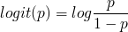 在logistic regression模型中，输出 Y=1 的对数几率是输入x的线性函数
6.1.3 模型参数估计
应用极大似然估计法估计模型的参数 设: 似然函数为： 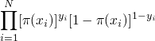 对数似然函数为： 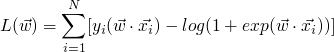 对对数似然函数求极大值，得到 的估计值。 问题变成以对数似然函数为目标函数的最优化问题。 通常采用梯度下降法和拟牛顿法。
6.1.4 多项logistic regression
6.2 最大熵模型
由最大熵推导实现
6.2.1 最大熵原理
假设离散随机变量X的概率分布为P(X)，则其熵为： 熵最大的模型为最好的模型。 最大熵原理通过熵的最大化来表示等可能性。
6.2.2 最大熵模型的定义
对于给定的输入X,以条件概率P(Y|X)输出Y。 学习的目标:用最大熵原理选择最好的分类模型。 最大熵模型 定义在条件概率分布P(Y|X)上的条件熵为： 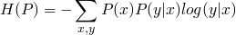 则满足所有约束条件的模型集合为C中条件熵H(P)最大的模型称为最大熵模型。
6.2.3 最大熵模型的学习
形式化为约束最优化问题，将约束最优化问题转换为无约束最优化的对偶问题，通过解对偶问题求解原问题。 最大熵模型： 其中， 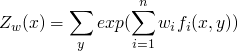 特征函数为 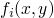 ， 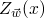 称为规范化因子， n为特征函数的个数， 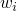 为特征的权值。
6.2.4 极大似然估计
证明了最大熵模型学习中的对偶函数的极大化等价于最大熵模型的极大似然估计
最大熵模型的一般形式
 其中
其中
 这里 为输入， 为输出， 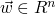 为权值向量，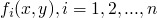 为任意实值特征函数。
这里 为输入， 为输出， 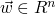 为权值向量，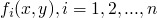 为任意实值特征函数。
6.3 模型学习的最优化算法
logistic regression、最大熵模型学习归结为以似然函数为目标函数的最优化问题，通常通过迭代法求解。能保证找到全局最优解，牛顿法和拟牛顿法收敛速度快。
6.3.1 改进的迭代尺度法(IIS)
当前的参数向量是 ,找到一个新的参数向量 ,使得模型的对数似然函数增大，重复这一过程，直至找到对数似然函数的最大值。
6.3.2 拟牛顿法
最大熵模型： 目标函数（熵最大化）： 梯度：
算法：
(1)选定初始点 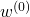 ,取 为正定对称矩阵，置k=0
(2)计算  , 若 ,则停止计算， 得 ; 否则转到(3)
(3)由 求出 。
(4)一维搜索：求 使得
(5)置
, 若 ,则停止计算， 得 ; 否则转到(3)
(3)由 求出 。
(4)一维搜索：求 使得
(5)置  (6)计算 , 若 , 则停止计算, 得 ; 否则， 按下式求出 :
其中，
(7)置 k = k +1, 转(3).
(6)计算 , 若 , 则停止计算, 得 ; 否则， 按下式求出 :
其中，
(7)置 k = k +1, 转(3).
7 支持向量机
在特征空间间隔最大大的线性分类器。 核技巧，非线性分类器 学习策略：间隔最大化 学习算法是求解凸二次规划的最优化算法
模型：线性可分支持向量机、线性支持向量机、非线性支持向量机（由简到繁） 训练数据线性可分 硬间隔最大化 线性可分支持向量机 训练数据近似可分 软间隔最大化 线性支持向量机 训练数据线性不可分 核技巧和软间隔最大化 非线性支持向量机
输入空间是欧式空间或者离散集合、特征空间是希尔伯特空间时，核函数：将输入从输入空间映射到特征空间得到特征向量之间的内积。 核方法是比支持向量机更为一般的机器学习方法。
7.1 线性可分支持向量机和硬间隔最大化
7.1.1 线性可分支持向量机
利用间隔最大化求最优分离超平面，解唯一。
7.1.2 函数间隔和几何间隔
函数间隔 样本点 的函数间隔： 关于训练集的函数间隔： 对w进行约束，||w|| = 1,函数间隔变成几何间隔
7.1.3 间隔最大化
- 最大间隔分离超平面
线性可分支持向量机学习的最优化问题： 最大间隔分离超平面的存在具有唯一性
- 支持向量和间隔边界
训练样本点与分离超平面距离最近的实例为支持向量
- 学习的对偶算法
优点：对偶问题往往更容易求解、自然引入核函数，推广到非线性分类 根据拉格朗日对偶性，原始问题的对偶问题是极大极小问题： 为了得到对偶问题的解，需要先求 对 的极小化，接着求对的极大化。 与之等价的对偶最优化问题： 分类决策函数只依赖于输入x和训练样本输入的内积
对于给定的线性可分训练集，通过对偶问题求得w,b, 得到分离超平面和分类决策函数。这种方法是线性可分支持向量机的基本学习算法。
w,b只依赖于训练样本中对应于 $αi > 0 $ 的样本点，将这样的点称为支持向量。
7.2 线性支持向量机与软间隔最大化
7.2.1 线性支持向量机
引入松弛变量  ,使函数间隔加上松弛变量大于等于0，约束条件变为：
目标函数变为：
C > 0称为惩罚参数
使 尽量小即间隔尽量大，使误分类的额个数尽量小
线性不可分的线性支持向量机学习的原始问题：
可以证明w的解是唯一的，b的解不唯一，存在一个区间
,使函数间隔加上松弛变量大于等于0，约束条件变为：
目标函数变为：
C > 0称为惩罚参数
使 尽量小即间隔尽量大，使误分类的额个数尽量小
线性不可分的线性支持向量机学习的原始问题：
可以证明w的解是唯一的，b的解不唯一，存在一个区间
7.2.2 学习的对偶算法
原始问题对应的对偶问题不变，满足的条件发生改变 $ 0<= αi <= C, i=1,2,…N$
7.2.3 支持向量
软间隔的支持向量或者在间隔的边界上，或者在间隔边界与分离超平面之间，或者在分离超平面误分类一侧。
7.2.4 合页损失函数
线性支持向量机学习，模型：分离超平面及决策函数，学习策略：软间隔最大化，学习算法：凸二次规划 另一种解释，最小化如下目标函数： 目标函数的第一项称为经验损失，第一项称为合页损失函数，第二项是正则化项。
7.3 非线性支持向量机和核函数
7.3.1 核技巧
核技巧通过一个非线性变换将输入空间对应与一个特征空间。分类任务在特征空间求解线性支持向量机。
存在输入空间到特征空间的映射
 使得对所有的 ,函数K(x,z)满足条件
则称K(x,z)为核函数(任意两个输入变量在高维映射中的内积)， 为映射函数。
核技巧：只定义核函数，而不显示地定义映射函数。直接计算核函数容易，而通过映射函数计算复杂。
对于给定的核函数，特征空间和映射函数大的取法不唯一。
使得对所有的 ,函数K(x,z)满足条件
则称K(x,z)为核函数(任意两个输入变量在高维映射中的内积)， 为映射函数。
核技巧：只定义核函数，而不显示地定义映射函数。直接计算核函数容易，而通过映射函数计算复杂。
对于给定的核函数，特征空间和映射函数大的取法不唯一。
核技巧在支持向量机中的应用 在对偶的目标函数中的内积 可以用核函数 来代替，同时分类决策函数中的内积也可以用核函数来代替。
7.3.2 正定核
K(x,z)为对称函数，则K(x,z)为正定核函数的充要条件是对任意的 K(x,z)对应的Gram矩阵： 是半正定矩阵。 检验是否是正定核函数并不容易。
7.3.3 常用核函数
多项式核函、高斯核函数、字符串核函数 字符串核函数：两个字符串相同的子串越多，他们就越相似，字符串核函数的值就越大。可以由动态规划快速计算。
7.3.4 非线性支持向量分类机
将线性支持向量机扩展到非线性支持向量机，只需将线性支持向量机对偶形式中的内积换成核函数。
非线性支持向量机学习算法 （1）选取适当的核函数K(x,z)和适当的参数C，构造并求解最优化问题 求得最优解 选取 求 构造决策函数
7.4 序列最小最优化算法
SMO算法：若所有变量的解都满足KKT条件，则解就得到了；否则，选择两个变量，固定其他变量，构建二次规划问题并求解，将原问题不断分解为子问题并对子问题求解，进而求解原问题。 包含：求解两个变量二次规划的解析方法、选择变量的启发式方法
7.4.1 两个变量二次规划的求解方法
7.4.2 变量选择的方法
第1个变量的选择 外层循环选取违背KKT条件最严重的点，首先遍历在间隔边界上的支持向量的点，检验是否满足条件，若都满足条件，则遍历整个训练集，检验是否满足条件。 第2个变量的选择 选择的标准，使第二个变量有足够大的变化
8 提升方法
在分类中，boosting 通过改变训练样本的权重，学习多个分类器，并将这些分类器进行线性组合，提高分类的性能。
8.1 提升方法AdaBoost算法
8.1.1 提升方法的基本思路
PAC(probably approximately correct)概率近似正确 强可学习和弱可学习等价 将弱可学习算法提升为强可学习算法, adaboost 提升方法从弱学习算法出发，反复学习，得到一系列弱分类器（基本分类器），然后组合弱分类器，构成一个强分类器。大多数的提升方法都是改变训练数据的概率分布，针对不同的数据分布学得不同的弱学类器。
如何改变训练数据的权值和概率分布 Adaboost:提高那些被前一轮弱分类器错误分类样本的权值，而降低那些被正确分类样本的权值。
如何将弱分类器组合成一个强分类器 Adaboost:加权多数表决，加大分类误差率小的弱分类器的权值，减小分类误差率大的权值。
8.1.2 Adaboost算法
8.1.3 Adaboost的例子
8.2 Adaboost算法的训练误差分析
Adaboost的训练误差是以指数速率下降的。具有适应性，能适应弱分类器各自的训练误差率。
8.3 Adaboost算法的解释
另一种解释，模型为加法模型，损失函数为指数函数、学习算法为前向分布算法的二类分类学习方法。
8.3.1 前向分布算法
8.3.2 前向分布算法与Adaboost
8.4 提升树
以分类树或者回归树为基本分类器的提升方法。
8.4.1 提升树模型
可以表示为决策树的加法模型： 其中，T表示决策树， 为决策树参数； M为树的个数。
8.4.2 提升树算法
采用前向分步算法。 首先确定初始提升树 ,第m步的模型是： 通过经验风险极小化确定下一棵决策树的参数 . 树的线性组合能很好地拟合训练数据，提升树是一个高功能算法。 不同的提升树算法，其区别是损失函数不同。 回归问题：使用平方误差损失函数 分类问题：使用指数损失函数 一般决策问题：一般损失函数
二类分类问题，将adaboost中的基本分类器限定为二类分类器，提升树是Adaboost的特殊情况。 回归问题的提升树只需简单地拟合当前模型的残差。
回归问题的提升树算法：
输入：训练数据集
输出：提升树
(1)初始化  (2)对m=1,2,…,M
(a)计算残差
(b)拟合残差$rmi$学习一个回归树，得到T
(c)更新fm(x) = fm-1(x) + T
(3)得到回归问题提升树
(2)对m=1,2,…,M
(a)计算残差
(b)拟合残差$rmi$学习一个回归树，得到T
(c)更新fm(x) = fm-1(x) + T
(3)得到回归问题提升树
8.4.3 梯度提升
对一般损失函数，提升树的优化并不容易。梯度提升，利用最速下降法的近似方法，利用损失函数的负梯度在当前模型的值 作为回归问题提升树算法中残差的近似值，拟合一个回归树。
算法步骤： (1)初始化：估计使损失函数极小化的常数值，是只有根结点的树。 (2a)计算损失函数的负梯度在当前模型的值，将它作为残差的估计。 (2b)估计回归树叶结点区域，以拟合残差的近似值。 (2c)利用线性搜索估计叶节点区域的值，使损失函数极小化。 (2d)更新回归树 (3)得到最终模型
9 EM算法及其推广
用于含有隐参数的概率模型参数的极大似然估计，或极大后验概率估计。 迭代由两步组成： E步：求期望 M步：求极大
9.1 EM算法的引入
最大似然估计需满足一个重要假设：采样是独立同分布的 最大后验概率估计：与最大似然估计类似，但最大的不同是最大后验概率估计融入了要估计量的先验分布在其中。故最大后验概率估计可以看做规则化的最大似然估计。
9.1.1 EM算法
定义Q函数： 完全数据的对数似然函数 关于在给定观测数据Y和当前参数 下对未观测数据Z的条件概率的期望称为Q函数， 即
EM算法与选取的初值有关，选择不同的初值得到不同的参数估计值。
EM算法
输入：观测变量数据值Y,隐变量数据Z,联合分布  , 条件分布 。
输出：模型参数
(1)选择参数 ， 开始迭代
(2)E步：记 为第i次迭代参数 的估计值，在第i+1次迭代的E步，计算
, 条件分布 。
输出：模型参数
(1)选择参数 ， 开始迭代
(2)E步：记 为第i次迭代参数 的估计值，在第i+1次迭代的E步，计算
![$$ Q(\theta, \theta^{(i)}) = E_Z[logP(Y,Z|\theta)|Y,\theta^{(i)}] $$](ltxpng/统计学习方法笔记_529008f4659f92d67bf5eb984efe80a2506fad66.png) (3)M步：求使 极大化的 ,确定第i+1次的估计值
(4)重复第(2)步和第(3)步，直到收敛。
第二步中的Q函数是EM算法的核心。
(3)M步：求使 极大化的 ,确定第i+1次的估计值
(4)重复第(2)步和第(3)步，直到收敛。
第二步中的Q函数是EM算法的核心。
9.1.2 EM算法的导出
通过近似求解观测数据的对数似然函数的极大化问题来导出EM算法。看出EM算法的作用。 EM算法通过不断求解下界的极大化逼近求解对数似然函数极大化，不能保证找到全局最优值。
9.1.3 EM算法在非监督学习中的作用
EM算法可以用于生成模型的非监督学习。生成模型由联合概率分布P(X,Y)表示，可以认为非监督学习训练数据是联合分布产生的数据，X是观测数据，Y是未观测数据。
9.1.4 EM算法的收敛性
定理：设 为观测数据的似然函数，
为EM算法得到的参数估计序列，  为对应的似然函数序列，则 是单调递增的。
为对应的似然函数序列，则 是单调递增的。
定理：…. 定理只能保证参数估计序列收敛到对数似然函数序列的稳定点，不能保证收敛到极大值点。 常用方法是选取几个不同的初值进行迭代，然后从得到的各个估计值加以比较，从中选择最好的。
9.2 EM算法在高斯混合模型中的应用
EM算法的一个重要应用：高斯混合模型的参数估计
9.2.1 高斯混合模型
高斯混合模型： 其中， 是系数， 是高斯分布密度
9.2.2 高斯混合模型参数估计的EM算法
1.明确隐变量，写出完全数据的对数似然函数
隐变量：反映观测数据 来自第k个分模型的未知数据，记为  观测数据： 未观测数据
完全数据的似然函数：
观测数据： 未观测数据
完全数据的似然函数：
2.EM算法的E步，确定Q函数 计算 当前模型的第j个观测数据来自第k个分模型的概率， 记为 。
3.确定EM算法的M步。 用 , ， 表示 的各参数，通过偏导数为0求的值。 重复上述过程，直至对数似然函数不再有明显变化。
9.3 EM算法的推广
EM算法还可以解释为F函数的极大-极大算法，基于这个解释有若个变形和推广 GEM
9.3.1 F函数的极大-极大算法
定义： 隐变量数据Z的概率分布为 ,定义分布 与参数 的函数 如下： 称为F函数， 式中 是分布 的熵。
EM算法的一次迭代可由F函数的极大-极大算法实现 (1) 对固定的 ,求 ，使得 最大化。 (2) 对固定的 ,求 ,使得 最大化。
9.3.2 GEM算法
GEM算法1: EM算法的F函数方法表达 GEM算法2: 并不直接求极大，而是找到一个 使函数值变大。 GEM算法3: 参数 的维数d>=2时，将M步分解为d次条件极大化。
10 隐形马尔科夫模型
可用于标注问题的统计学习的模型，描述由隐形的马尔科夫链随机生成观测序列的过程,属于生成模型。在语音识别、自然语言处理、生物信息、模式识别等领域有广泛的应用。
10.1 马尔科夫模型的基本概念
10.1.1 隐马尔科夫模型的定义
定义：隐马尔科夫模型是关于时序的概率模型，描述由一个隐藏的马尔科夫链随机生产不可观测的状态随机序列，再由各个状态生成一个观测而产生观测随机序列的过程。隐形的马尔科夫链随机生成的状态的序列，称为状态序列；每个状态产生一个观测，而由此产生的观测的随机序列，称为观测序列。序列的每一个位置又可以看作一个时刻。
隐形马尔科夫模型由初始概率分布、状态转移概率分布、以及观测概率分布确定。
形式定义：
Q是所有可能的状态的集合，V是所有可能的观测的集合。
N：可能的状态数 M:可能的观测数
I是长度为T的状态序列，O是对应的观测序列。
A是状态转移概率矩阵：
其中，
是在时刻t处于状态 在时刻t+1跳转到状态  的概率。
B是观测概率矩阵：
其中，
是在时刻t处于状态 的条件下生成观测 的概率。
是初始状态概率向量：
其中，
的概率。
B是观测概率矩阵：
其中，
是在时刻t处于状态 的条件下生成观测 的概率。
是初始状态概率向量：
其中，
 是在时刻t=1处于状态 的慨率。
是在时刻t=1处于状态 的慨率。
隐形马尔科夫模型由初始概率向量 、状态转移概率矩阵A和观测概率矩阵B决定。 和A决定状态序列，B决定观测序列。因此，隐形马尔科夫模型 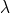 可以用三元符号表示，即
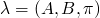
 称为隐形马尔科夫模型的三要素。
齐次马尔可夫假设：每一时刻只依赖于前一时刻
观测独立性假设：观测只依赖于马尔科夫链的状态
称为隐形马尔科夫模型的三要素。
齐次马尔可夫假设：每一时刻只依赖于前一时刻
观测独立性假设：观测只依赖于马尔科夫链的状态
10.1.2 观测序列的生成过程
10.1.3 隐形马尔科夫模型的3个基本问题
(1)概率计算问题 给定模型 和观测序列O，计算 。 (2)学习问题 已知观测序列O,估计模型 参数， 使 最大 极大似然估计 。 (3)预测问题 给定模型 和 观测序列 , 求最有可能的对应的状态序列 。
10.2 概率计算算法
前向算法、后向算法
10.2.1 直接计算法
概念上可行，计算上不可行 按概率公式直接计算，计算量大， 阶。
10.2.2 前向算法
前向概率定义：给定马尔科夫模型，定义到时刻t部分观测序列为  且状态为 的概率为前向概率，记作
可以递归地求出前向概率 及观测序列概率 。
且状态为 的概率为前向概率，记作
可以递归地求出前向概率 及观测序列概率 。
观测序列概率的前向算法 (1)初值 (2)递推 对 t = 1,2,…, T -1 (3)终止 每一次计算直接引用前一个时刻的计算结果，避免重复计算。 计算量 阶，直接计算是 阶。
10.2.3 后向算法
10.2.4 一些概率与期望值的计算
10.3 学习算法
根据训练数据包含观测序列和对应的状态序列还是只有观测序列，可以分别由监督学习和非监督学习实现。
10.3.1 监督学习方法
用极大似然估计来估计隐马尔科夫模型的参数。 1.转移概率 $aij $ 的估计 设样本中时刻t处于状态i，时刻t+1转移到状态j的频数为 ,那么状态转移概率 的估计是 2.观测概率 的估计 设样本中的状态为j并观测为k的频数为 ，那么状态为j观测为k的概率为 3.初始状态概率的估计 作为S个样本中初始状态为 的频率。
10.3.2 Baum-Welch算法(EM算法)
人工标记代价高 非监督学习方法
给定观测序列，无状态序列，目标：学习隐马尔科夫模型的参数。 EM算法学习实现： 观测数据：观测序列数据O 不可观测隐数据：状态序列数据I 对数似然函数：
EM算法的E步：求Q函数 。
EM算法的M步：极大化Q函数求  。
。
10.3.3 Baum-Welch 模型参数估计公式
10.4 预测算法
10.4.1 近似算法
在每一时刻，选择最有可能发生的状态，作为预测结果。 优点：计算简单 缺点：不能保证预测的状态序列整体是最有可能的状态序列。
10.4.2 维特比算法
用动态规划解隐马尔科夫模型预测问题。 部分最优路径唯一，通过递推分割由部分最优达到全局最优。
定义在时刻t状态为i的所有单个路径 中概率最大值为 由定义可得变量 的递推公式： 定义在时刻t状态为i的所有单个路径中概率最大的路径的第t-1个结点为 :用于找出最优路径的各个结点。
算法 (1)初始化 (2)递推 (3)终止 (4)最优路径回溯
11 条件随机场
条件随机场(CRF)是给定一组输入随机变量条件下另一组输出随机变量的条件概率分布模型。 特点：假设输出随机变量构成马尔科夫随机场。 主要讲述线性链条件随机场
11.1 概率无向图模型
又称为马尔科夫随机场，可以由无向图表示的联合概率分布。
11.1.1 模型定义
无向图表示的随机变量之间存在成对马尔科夫性、局部马尔可夫性、全局马尔科夫性。
成对马尔可夫性：u,v是没有边连接的结点，O是其他结点，给定随机变量组 的条件下随机变量 和 是条件独立的。
局部马尔可夫性：W是与v有边连接的结点，O是其他结点，给定随机变量组 的条件下随机变量 和 是条件独立的。
全局马尔可夫性：点集合A,B是被C分开的任意结点集合，给定随机变量组 的条件下随机变量组 和  是条件独立的。
是条件独立的。
概率无向图模型定义： 结点表示随机变量，边表示依赖关系。若联合概率分布P(Y)满足成对马尔可夫性、局部马尔可夫性、全局马尔可夫性，就称此联合概率分布为概率无向图模型，或马尔科夫随机场。 求解马尔科夫模型：将联合概率进行因式分解。
11.1.2 概率无向图的因式分解
定义团和最大团 概率无向图的因式分解：将无向图模型的概率分布表示为最大团上的随机变量函数的乘积形式 给定无向图概率模型，设其无向图为G，C为G上的最大团， 表示C对应的随机变量。那么概率无向图模型的联合概率分布P(Y)可写作图中所有最大团C上的函数 的乘积形式，即 其中， Z是规范化因子，由式 给出。保证P(Y)构成一个概率分布。函数 称为势函数，要求势函数严格为正。
11.2 条件随机场的定义和形式
11.2.1 条件随机场的定义
条件随机场（CRF）是给定随机变量X的条件下，随机变量Y的马尔科夫随机场。 线性链条件随机场： 用于标注等问题 条件概率模型P(Y|X)，Y是输出变量（状态序列）， X是输入变量（观测序列）。学习时，通过（正则化）极大似然估计得到条件概率P(Y|X)。预测时，对于给定的输入序列x,求出条件概率 最大的输出序列 . 条件随机场的定义 设X与Y是随机变量，P(Y|X)是在给定X的条件下Y的条件概率分布，若随机变量Y构成一个由无向图G=(V,E)表示的马尔科夫随机场，则称条件概率分布P(Y|X)为条件随机场。 定义中未要求X和Y有相同的结构，现实中一般假设有相同的图结构。
线性链条件随机场的定义 设 ， 均为线性链表示的条件随机序列，若给定条件随机序列X的条件下，随机变量序列Y的条件分布序列 构成条件随机场，即满足马尔可夫性，则称P(Y|X)为线性链条件随机场。
11.2.2 条件随机场的参数化形式
设P(Y|X)为线性链条件随机场，则在随机变量X取值为x的条件下，随机变量Y取值为y的条件概率具有如下形式： 其中， 为转移特征， 为状态特征，取值为0或者1； 为对应的权值。 例11.1 1+ 0.2 + 1 + 0.5 + 0.5 = 3.2
11.2.3 条件随机场的简化形式
同一特征在各个位置都有定义，对同一特征在各个位置求和，将局部特征函数转化成一个全局特征函数，将条件随机场写成权值向量和特征向量的内积形式。 先将转移特征和状态特征用统一的符号 表示。 然后，对转移和状态特征在各个位置上求和。 接着用统一的符号 表示特征 的权值。 于是，条件随机场可以表示为： 若以向量表示为：
11.2.4 条件随机场的矩阵形式
11.3 条件随机场的概率计算问题
给定条件随机场P(Y|X),输入序列x和输出序列y,计算条件概率 以及相应的数学期望的问题。
11.3.1 前向-后向算法
定义前向变量 , 表示在位置i的标记是 并且到位置i 的前部分标记序列的非规范化概率。 可取m个， 是m维向量。 定义后向变量 , 表示在位置i的标记为 并且从 i+1 到 n的后部分标记序列的非规范化概率。
可得：
11.3.2 概率计算
11.3.3 期望值计算
11.4 条件随机场的学习算法
模型：定义在时序数据上的对数线性模型 学习方法：（正则化的）极大似然估计
11.4.1 改进的迭代尺度法
11.4.2 拟牛顿法
11.5 条件随机场的预测算法
维特比算法
12 附录B 牛顿法和拟牛顿法
12.1 牛顿法
将f(x) 在 处附近进行二阶泰勒展开，并令其一阶导数为0，求的
12.2 拟牛顿法的思路
在牛顿法的迭代过程中，需要计算海塞矩阵的逆矩阵，计算复杂，考虑用n阶矩阵来近似替代。 每次迭代选择更新矩阵 $Gk+1$：
12.3 DFP算法
可以证明，若初始矩阵 是正定的，则在迭代过程中的每个矩阵 都是正定的。
12.4 BFGS算法
最流行的拟牛顿算法 可以证明，若初始矩阵 是正定大的，则迭代过程中的每个矩阵 都是正定的。